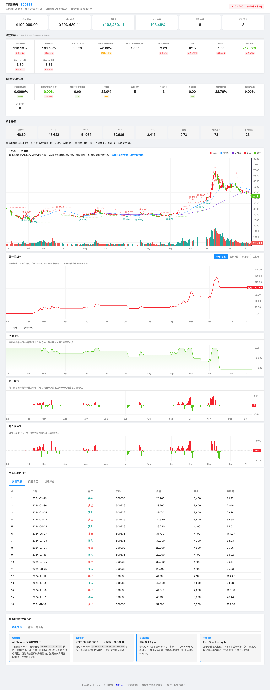
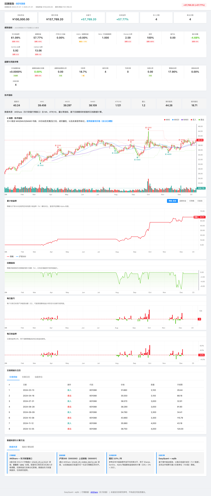
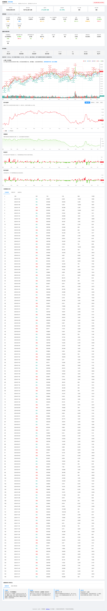
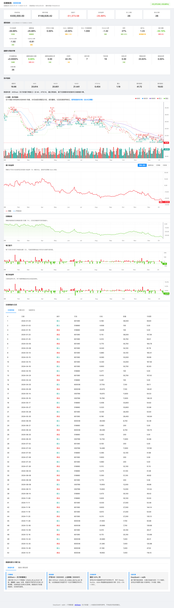

回测报告怎么看：HTML、PNG、Markdown、JSON 与风险指标¶
配合 用户手册 — 回测报告与图表解读 阅读。生成报告的推荐入口是
run_strategy（一次得到 PNG、HTML、MD、JSON）。仓库内真实输出样例： 见根目录
reports/README.md（与examples/各脚本对应）；教程中的截图与之一致，见tutorials/assets/example_report_html_19_localdata.png。
{kind=link}
1. 运行后你会得到什么？¶
在代码中调用：
from eqlib import run_strategy
result = run_strategy(
initialize,
start_date="2024-01-01",
end_date="2024-12-31",
starting_cash=100_000,
benchmark="000300.XSHG",
securities=["601390"],
report_dir="reports",
)
终端会打印类似路径（时间戳每次不同）：
| 文件 | 用途 |
|---|---|
reports/backtest_YYYYMMDD_HHMMSS.png |
静态图：价格、均线、买卖点、组合净值/回撤等（与策略实现有关） |
reports/backtest_YYYYMMDD_HHMMSS.html |
交互式报告：指标卡片、K 线、累计收益、回撤、每日盈亏、成交与持仓等 |
reports/backtest_YYYYMMDD_HHMMSS.md |
人类可读的摘要 + 表格化交易记录 |
reports/backtest_YYYYMMDD_HHMMSS.json |
程序化分析用结构化数据 |
用浏览器 直接打开 .html 文件（双击或「文件 → 打开」），无需启动 Web 服务器。
1.1 HTML 报告页面概览¶
打开 .html 文件后，你看到的页面大致分为以下区块（以下为 Example 22 选股策略 的回测截图）：

页头（标题 + 盈亏金额）→ 核心指标卡片 → 详细指标行 → K 线图 → 累计收益率 → 回撤 → 每日盈亏 → 成交/持仓标签页。
下面是每个区块的详细说明。
2. HTML 报告页面结构（从上到下）¶
以下为 generate_html_report 生成页面的逻辑顺序，便于你对照屏幕阅读。
2.1 页头¶
- 标题：回测标的或组合说明。
- 摘要区：回测区间、初始资金、最终资产、盈亏金额与比例等。
2.2 指标卡片（可点击看说明）¶
常见字段与读法：
| 展示名 / 字段 | 含义（直觉版） |
|---|---|
| 年化收益 | 把整段回测收益换算成「若按同样波动持续一年」的复利年化水平；便于跨周期对比 |
| 超额收益 | 策略总收益相对基准总收益的多出部分 |
| 基准收益 | 同一区间内基准指数涨跌幅 |
| Alpha | 相对基准回归后的年化超额收益（CAPM 意义下「跑赢/跑输」的一部分） |
| Beta | 相对大盘的弹性；1 附近表示与指数同涨同跌，大于 1 波动更大 |
| 夏普比率 | 每承担一单位总波动，获得多少超过无风险利率的收益；一般 > 1 认为尚可 |
| 胜率（交易） | 完整「买—卖」配对中，盈利回合占比 → 对应 win_rate_trade |
| 盈亏比 | 平均盈利单 / 平均亏损单（绝对值比） |
| 最大回撤 | 从历史峰值到之后谷底的最大跌幅，负数，绝对值越小风控越好 |
| 索提诺比率 | 类似夏普，但分母只用下行波动；更关注「跌的时候有多痛」 |
| 卡玛比率 | 年化收益 / |最大回撤|；回撤小且收益高则数值大 |
| 日超额收益（年化） | 日度超额收益均值的年化 |
| 超额最大回撤 | 超额收益序列上的最大回撤 |
| 超额夏普 | 日超额收益的夏普 |
| 日胜率 | 盈利交易日 / 总交易日 → win_rate_daily |
| 盈利笔数 / 亏损笔数 | 配对交易后的笔数 |
| 信息比率 | 主动收益相对跟踪误差的效率 |
| 年化波动率 | 策略日收益年化标准差 |
| 基准波动率 | 基准日收益年化波动 |
| 交易次数 | 完成的配对交易笔数 |
卡片上的「评级条」为根据阈值着色的快速提示，仍以你自己策略目标为准。
2.3 K 线与技术图区（若有）¶
标题一般为 「K 线图 · 技术指标」：主图价格与成交量，叠加均线、买卖点等（依赖回测数据与记录）。
2.4 累计收益率¶
- 策略累计收益（%）曲线。
- 可与 基准 同图对比（数据来自指数行情接口，失败时可能仅显示策略线）。
2.5 回撤曲线¶
显示组合从历史新高的回落深度，用于判断最差情况有多糟。
2.6 每日盈亏 / 每日收益率¶
柱状或曲线展示 相邻交易日 组合价值变化；用于看「是否连续亏损」「波动是否集中」。
2.7 标签页：成交、日历、持仓等¶
- 成交：每笔买卖的时间、价格、数量、佣金。
- 持仓：各期末或关键节点的持仓结构（以实际导出为准）。
- 其他 Tab 为辅助信息（如数据源说明等）。
2.8 对照走读示例（reports/…19_localdata + HTML）¶
下面用一次真实导出（与 reports/README.md 推荐组 backtest_*_19_localdata 对应，标的 000768，区间 2024-01-01～2024-12-31）说明：打开 HTML 时，各块数字在说什么。运行 python examples/19_local_data_backtest.py 后，在 reports/ 下打开最新 *_19_localdata.html，对照下表阅读（下列数值为该次运行的快照，与教程配图 ../tutorials/assets/example_report_html_19_localdata.png 同源）。
说明：本示例策略在该区间亏损，用来读报告很合适——夏普为负、卡玛为负、回撤大，都是「风险指标在说话」。
| HTML 上常见位置 | 本例约值（见 MD/JSON） | 读法 |
|---|---|---|
| 页眉 / 总盈亏 | 约 -33.28% | 全区间总收益率（相对初始资金），与 summary.pnl_pct、risk_metrics.total_return 一致。 |
| 摘要行 | 初始 100,000 → 期末 66,718 | 已扣交易成本后的组合净值终值。 |
| 年化收益 | -34.50% | 由日收益折算的年化水平；亏损策略常为负。 |
| 年化波动率 | 21.42% | 收益波动幅度；越高曲线越「抖」。 |
| 夏普比率 | -2.01 | 风险调整后收益；低于无风险收益且波动大时为负。 |
| 索提诺比率 | -2.60 | 只看下行波动的风险调整指标；本例亦为负。 |
| 最大回撤 | -38.32% | 从峰值到谷底的最大跌幅；本例回撤深，风控压力大。 |
| 卡玛比率 | -0.90 | 年化收益 / |最大回撤|；收益负时常为负。 |
| 日胜率 | 14.1% | win_rate_daily：盈利交易日占比，与「交易胜率」不同。 |
| 胜率（交易） | 12.5% | win_rate_trade：完整买—卖配对中，盈利回合占比；本例 8 对里仅 1 对净赚。 |
| 盈利笔数 / 亏损笔数 | 1 / 7 | 配对层面的赢/输笔数。 |
| 盈亏比 | 0.07 | 平均盈利单相对平均亏损单；远小于 1 表示亏多赚少。 |
| 交易次数（配对） | 8 | 完成「一轮买+卖」的组数；与 JSON summary.num_trades（单边成交条数，本例 16）不同，见 FAQ。 |
| 年化换手率 | 约 807%（界面） / JSON annual_turnover 8.07 |
为成交额相对规模的年化度量；界面常以百分数展示。 |
| 总佣金 | 716.97 | 报告汇总佣金；净值路径已反映成本，此项便于审视成本占比。 |
| Alpha / Beta / 信息比率 | 本例多为 0 或 1 | 当基准序列未对齐时可能为占位；summary.benchmark_return 为 null 时见 FAQ。 |
交互区（K 线、累计收益、回撤、每日盈亏）：用鼠标在图上拖动、缩放；策略线 vs 基准线对比「是否跑赢指数」。若整页图表空白，多为 CDN 脚本被内网拦截，需联网或换网络（见 FAQ — HTML 图表空白）。
自己截 HTML 长图（可选）：浏览器全屏后使用系统截图（如 macOS Cmd + Shift + 4、Windows Win + Shift + S），截取页眉 + 指标卡片区，便于写笔记或与同事对齐结论。
3. PNG 图（generate_chart）怎么读？¶
典型元素包括：
- 价格与均线：判断趋势与信号是否出现在合理位置。
- 买卖点标记：与策略逻辑对照，是否存在「追高杀跌」。
- 组合总价值或收益：右侧或副图，看资金曲线是否平滑上升。
- 回撤带：下方区域展示回撤深度。
若图中缺少净值曲线，请对照 FAQ — PNG 很空 检查 record / 记录数据是否完整。
4. analyze_returns 指标字典¶
对 result = run_backtest(...) 或 run_strategy 的返回值：
from eqlib import analyze_returns
m = analyze_returns(result, risk_free_rate=0.03, trading_days=252)
当 result["recorded_values"] 不足以构造日净值序列时，函数可能返回 None，此时 HTML 中部分指标也会缺失。
| 键名 | 含义 |
|---|---|
total_return |
全区间总收益率（基于起止组合价值） |
annual_return |
由日收益几何年化得到的年化收益 |
annual_volatility |
日收益标准差 × √252 |
sharpe_ratio |
夏普比率（年化，扣无风险利率） |
sortino_ratio |
索提诺比率 |
max_drawdown |
最大回撤（负数） |
calmar_ratio |
年化收益 / |最大回撤| |
alpha |
年化 Alpha（相对基准） |
beta |
Beta |
information_ratio |
信息比率 |
win_rate_daily |
日胜率 |
win_rate_trade |
配对交易胜率 |
trade_count |
完成配对交易次数 |
win_count / loss_count |
盈利 / 亏损交易笔数 |
profit_loss_ratio |
盈亏比 |
annual_turnover |
年化换手率（成交额相对规模） |
total_commission |
佣金合计（报告用；净值已反映成本） |
net_return |
与 total_return 一致含义（见源码注释） |
excess_return |
策略总收益 − 基准总收益 |
benchmark_return |
基准总收益 |
excess_return_max_drawdown |
超额收益序列最大回撤 |
excess_return_sharpe |
超额收益夏普 |
daily_excess_return |
日超额收益年化均值 |
benchmark_volatility |
基准年化波动率 |
无风险利率默认 risk_free_rate=0.03（年化 3%），可按研究习惯修改。
5. Markdown / JSON 报告¶
- Markdown：适合贴到笔记或版本库，快速浏览摘要与成交表。
- JSON：适合写脚本批量对比多组参数、画自定义图、接入仪表板。
JSON 顶层字段随版本可能扩展，以生成文件为准；核心通常包含盈亏比例、交易列表、记录序列等。
读 JSON 时注意：summary.num_trades 多为单边成交条数，与「配对交易笔数」不同，见 FAQ。
5b. 不同策略报告对比：如何通过报告判断策略好坏¶
以下是 4 个不同策略在 2024 年的回测截图，报告结构相同，数值各异。
盈利策略：MACD 趋势 + 成交量确认（+103.48%）¶

- 夏普比率：高 → 风险调整后收益好
- 交易次数：16 笔 → 不算太频繁
- 累计收益曲线：总体向上
- 关键判断：盈利主要来几次大行情，不是靠频繁交易堆积
震荡市表现好：布林带均值回归（+57.77%）¶

- 交易次数：8 笔 → 低频策略
- 回撤：控制得当
- 关键判断：适合震荡市，趋势行情可能表现一般
组合策略：多因子选股（+5.19%）¶

- 交易次数：135 笔 → 高频换手
- 换手率高：佣金成本需关注
- 关键判断：收益被高频交易成本侵蚀
亏损策略：动量组合（-25.69%）¶

- 夏普比率：负值
- 最大回撤：-33.10%
- 日胜率：42.3% → 输多赢少
- 关键判断：动量策略在震荡市中反复"追涨杀跌"
如何从报告判断策略好坏¶
| 检查项 | 好策略 | 差策略 | 说明 |
|---|---|---|---|
| 年化收益 | 正数，> 10% | 负数或 < 5% | 基础要求 |
| 夏普比率 | > 1 | < 0 | 风险调整后收益 |
| 最大回撤 | < 15% | > 30% | 最大亏损承受 |
| 交易胜率 | > 50% | < 30% | 配对交易胜率 |
| 盈亏比 | > 1.5 | < 1 | 平均盈利/平均亏损 |
| 交易频率 | 适中 | 过多或过少 | 过多成本高 |
| Alpha | 正数 | 零或负 | 超额收益来源 |
6. 进阶：只生成某一种报告¶
from eqlib import run_backtest, generate_html_report, analyze_returns
result = run_backtest(initialize, "2024-01-01", "2024-12-31", securities=["601390"])
if result:
generate_html_report(result, "reports/my_report.html")
print(analyze_returns(result))